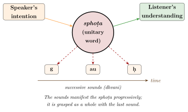

Chapter 8: Bhartṛhari’s Vākyapadīya: The Philosophy of Language¶
anādinidhanam brahma śabdatattvaṃ yad akṣaram
vivartate ’rthabhāvena prakriyā jagato yataḥ
The brahman without beginning or end, whose essence is the Word, the imperishable, which appears in the form of things, and from which the world proceeds.
— Vākyapadīya 1.1
8.1 Bhartṛhari¶
Bhartṛhari is the most important philosopher of the Sanskrit grammatical tradition. His Vākyapadīya (“[Treatise] on Sentence and Word”) takes up the questions raised in Patañjali’s Mahābhāṣya — what a word is, how it relates to meaning, how sentences convey what they convey — and builds them into a comprehensive philosophy in which language is the fundamental principle of reality (Iyer 1969; Coward and Raja 1990).
8.1.1 Date and identity¶
Bhartṛhari is now generally dated to the 5th century CE. The decisive evidence is that the Buddhist logician Dignāga (c. 480–540) quotes verses of the Vākyapadīya and was influenced by its ideas; and Bhartṛhari in turn seems unaware of Dignāga. The Chinese pilgrim Yijing, who studied in India in the late 7th century, reported that a famous grammarian named Bhartṛhari had died some forty years earlier, which would place him in the mid-7th century. That report was once widely followed, but it cannot be squared with Dignāga’s quotations and is now thought to rest on confusion with another person or on garbled information. Commentators name Vasurāta as Bhartṛhari’s teacher.
Tradition also identifies the grammarian with Bhartṛhari the poet, author of the three “centuries” of verses on worldly wisdom, love and renunciation (Śatakatraya). Most modern scholars consider the identification doubtful: the name was common, and the poetry is not demonstrably the work of the philosopher.
8.1.2 Works¶
Bhartṛhari’s main work, the Vākyapadīya, consists of about two thousand verses (kārikā) in three books (kāṇḍa). A prose commentary on the first two books, the Vṛtti, is regarded by most scholars as his own, though this has been disputed. He also wrote a commentary on Patañjali, the Mahābhāṣyadīpikā, of which only an opening portion, covering part of the first quarter of Pāṇini’s first chapter, survives in a single manuscript.
The Vākyapadīya has old commentaries by Vṛṣabhadeva (on the Vṛtti), Puṇyarāja (on the second book) and Helārāja of Kashmir (10th century, on the third book). Modern editions differ in their verse numbering: the critical edition of the verses by Wilhelm Rau (Rau 1977) numbers the first book differently from the edition with the Vṛtti by K. A. Subramania Iyer (Iyer 1965). Verse numbers below follow Rau unless stated otherwise.
8.2 Structure of the Vākyapadīya¶
The work is divided into three books (Table 8.1).
| Book | Name | Verses | Subject |
|---|---|---|---|
| I | Brahmakāṇḍa (also Āgamasamuccaya) | c. 150–180 | The Word-principle; grammar and tradition; the levels of speech; sphoṭa and sound |
| II | Vākyakāṇḍa | c. 490 | The sentence and its meaning; theories of the sentence; pratibhā |
| III | Padakāṇḍa (also Prakīrṇaka) | c. 1,325 | Fourteen sections (samuddeśa) on the categories of word-meaning |
8.3 The Word-Principle (śabdatattva)¶
The first verse (quoted at the head of this chapter) identifies the ultimate reality, brahman, with the “essence of the Word” (śabdatattva). This brahman is without beginning or end; it “appears” (vivartate) in the form of things, and the world proceeds from it. The second verse adds that this single principle appears as many through its powers:
Vākyapadīya 1.2
ekam eva yad āmnātaṃ bhinnaśaktivyapāśrayāt
apṛthaktve ’pi śaktibhyaḥ pṛthaktveneva vartate
“That which is taught as one, resting on its distinct powers, exists as if separate from them, though it is not separate from its powers.”
The chief of these powers is time (kālaśakti), which introduces sequence into what is in itself undivided. The language of vivarta (“appearance”) has invited comparison with Advaita Vedānta, and Bhartṛhari influenced Maṇḍana Miśra and later Advaitins; but scholars warn against reading the later Advaita doctrine of illusion back into him (Coward and Raja 1990; Bronkhorst 2011).
The best-known verse of the first book states the thesis that all cognition is bound up with language:
Vākyapadīya 1.131 (1.123 in Iyer’s edition)
na so ’sti pratyayo loke yaḥ śabdānugamād ṛte
anuviddham iva jñānaṃ sarvaṃ śabdena bhāsate
“There is no cognition in the world that is not accompanied by the word; all knowledge appears as if shot through with the word.”
The claim is a strong one: even perception, for Bhartṛhari, carries a latent verbal form. It was rejected by the Buddhist logicians, for whom perception in the strict sense is free of conceptual construction (kalpanāpoḍha, in Dignāga’s definition), and by many Naiyāyikas (Matilal 1990).
Bhartṛhari also gives grammar a soteriological value. In the first book he calls it the door to liberation and the remedy for the impurities of speech: through the knowledge of correct words one comes to understand the Word-principle itself.
8.3.1 Correct and corrupt words¶
Bhartṛhari also takes up Patañjali’s question of correct and incorrect words (Chapter 7). Incorrect forms (apabhraṃśa), he argues, do convey meaning, but only indirectly: hearing a corrupt form, a listener is reminded of the correct word, and it is the correct word that conveys the meaning. He reports two views on the history of language. On one, the “divine speech” was originally correct and was corrupted by speakers unable to pronounce it properly; on the other, held by those who deny that words are eternal, the popular speech is the natural, original language (prakṛti), and correct Sanskrit is a later refinement. Bhartṛhari himself sides with the first view, but the passage shows that the relation between Sanskrit and the Prakrits was already a subject of theoretical reflection in his time (Deshpande 1993).
8.4 The Levels of Speech¶
In the first book Bhartṛhari describes speech as threefold (trayī vāc):
- Paśyantī (“seeing”)
- Speech in which there is no sequence: the undivided form in which what is to be said exists before it is ordered into words.
- Madhyamā (“middle”)
- Speech as it exists in the mind, already ordered in sequence but not yet uttered.
- Vaikharī (“manifest”)
- Audible speech produced by the organs of articulation.
A fourth, higher level, parā, was added by later Kashmir Śaiva authors; Figure 1.1 in Chapter 1 shows the three levels together with this later addition.
8.5 The Sphoṭa Theory¶
The term sphoṭa, from the root sphuṭ “to burst, become manifest”, was used by Patañjali for the word as distinct from the sounds that utter it (Chapter 7). Bhartṛhari made it central.
8.5.1 The problem¶
When we hear the word gauḥ we hear the sounds g, au and ḥ one after another, and each has vanished before the next is uttered. Yet we understand the meaning “cow” as a whole. What, then, conveys the meaning? Not any single sound, since none of them alone means “cow”; and not all of them together, since they never exist together.
8.5.2 Bhartṛhari’s answer¶
The meaning is conveyed by the sphoṭa, a unitary linguistic entity that the sounds (dhvani, nāda) manifest but do not compose. The successive sounds reveal it progressively, each leaving an impression, until with the last sound the whole is grasped. Bhartṛhari distinguishes the “primary” sound (prākṛta dhvani), which is the pattern of sounds characteristic of the word, from the “secondary” features of a particular utterance (vaikṛta dhvani), such as speed, loudness or the speaker’s voice, which do not affect the word’s identity. The distinction has been compared with the modern distinction between the phonological form of a word and its phonetic realisation; the comparison is useful, though the sphoṭa is also, for Bhartṛhari, the bearer of meaning (Figure 8.1).

8.5.3 Word or sentence?¶
The sphoṭa can be discussed at the level of the sound, the word or the sentence. For Bhartṛhari the sentence is the real unit of communication: words and their parts are abstractions extracted from sentences by grammatical analysis (apoddhāra), useful for teaching but not the ultimate bearers of meaning. Much later, Nāgeśa Bhaṭṭa (c. 1700) systematised the doctrine into eight kinds of sphoṭa: of the sound, the word and the sentence; of the indivisible word and the indivisible sentence; and of the universals of sound, word and sentence. This eightfold scheme is Nāgeśa’s, not Bhartṛhari’s (Coward and Raja 1990).
8.6 The Sentence (Vākyakāṇḍa)¶
The second book opens by listing eight views of what a sentence is, held by different schools (Table 8.2).
| View | The sentence is … |
|---|---|
| ākhyāta | the verb (since a verb alone can be a complete sentence) |
| śabdasaṃghāta | the collection of words |
| jātiḥ saṃghātavartinī | a universal residing in the collection of words |
| eko ’navayavaḥ śabdaḥ | a single, partless utterance |
| krama | the sequence of words |
| buddhyanusaṃhṛti | the unified grasp of the words in the mind |
| padam ādyam | the first word |
| pṛthak sarvaṃ padaṃ sākāṅkṣam | each word, as long as it requires (literally “expects”) the others |
The commentator Puṇyarāja groups them into two kinds. Five treat the sentence as made up of parts (the verb, the collection of words, the sequence, the first word, and each word requiring the others); three treat it as a partless unity (the universal residing in the collection, the single partless utterance, and the unified grasp in the mind). Bhartṛhari discusses them all at length. His own view, from the highest standpoint, is that the sentence is a partless unity (akhaṇḍa) and that its meaning is grasped in a single flash of understanding, pratibhā.
8.6.1 Pratibhā¶
Pratibhā (“intuition, flash of understanding”) is the cognition in which the meaning of a sentence is grasped as a whole, and which prompts a hearer to act. Bhartṛhari extends the notion widely: it is pratibhā that tells a bird how to build its nest or a cuckoo when to sing in spring. He lists six sources from which it may arise: nature, conduct, practice, meditation, unseen merit, and the grace of a qualified person. The theory has been compared with Gestalt accounts of perception; its main point, in Bhartṛhari’s own terms, is that understanding a sentence is not a step-by-step inference from the meanings of its words.
8.6.2 Later debates on sentence-meaning¶
Bhartṛhari’s holism was one pole of a long debate. In the 7th century the Mīmāṃsakas developed two influential compositional theories: for Kumārila Bhaṭṭa and his followers, words first express their own meanings, which are then connected into the sentence-meaning (abhihitānvaya); for Prabhākara, words express their meanings only as already related to the other words of the sentence (anvitābhidhāna). Later Naiyāyikas, especially in the Navya-Nyāya school, built a precise account of the cognition produced by a sentence (śābdabodha) on the basis of word-meanings and the conditions of expectancy, compatibility and contiguity (Matilal 1990). The wider doctrines of these schools are treated in Volume 3, Darśana Darpaṇa.
8.7 The Categories of Meaning (Padakāṇḍa)¶
The third and longest book analyses the categories through which words mean, in fourteen sections (Table 8.3).
| No. | Section | Topic |
|---|---|---|
| 1 | Jāti | The universal as word-meaning |
| 2 | Dravya | The substance or individual as word-meaning |
| 3 | Sambandha | Relation, including the relation of word and meaning |
| 4 | Bhūyodravya | A short supplement on substance |
| 5 | Guṇa | Quality |
| 6 | Dik | Space and direction |
| 7 | Sādhana | The means of action: the kārakas |
| 8 | Kriyā | Action |
| 9 | Kāla | Time |
| 10 | Puruṣa | Grammatical person |
| 11 | Saṅkhyā | Number |
| 12 | Upagraha | The active and middle forms of the verb |
| 13 | Liṅga | Gender |
| 14 | Vṛtti | Complex formations: compounds and derivatives |
The book turns the categories of the grammar into questions of philosophy. On the old dispute whether words denote universals or individuals, Bhartṛhari follows Patañjali in showing that the grammar can be described on either view, and he treats the choice less as a question of fact than of perspective (Bronkhorst 2011). The relation between a word and its meaning, he argues, cannot itself be expressed as a thing; it is known only through usage, a position that Jan Houben has studied in detail (Houben 1995). The participants in an action, the kārakas, are fixed not by the nature of things but by how the speaker chooses to present them (vivakṣā): the same pot may be presented as the locus (“he cooks in the pot”), the instrument (“he cooks with the pot”) or even the agent (sthālī pacati, “the pot cooks”), which makes the kārakas grammatical-semantic categories rather than physical roles. And time, which in the first book was the chief power of the Word-principle, appears here as the power that orders all things in sequence, like the operator of a machine who sets all its parts in motion.
8.8 Theories of Meaning after Bhartṛhari¶
Bhartṛhari’s work belongs to a much wider debate about meaning that involved grammarians, Mīmāṃsakas, Naiyāyikas, Buddhists and theorists of poetry. Its participants agreed on few answers, but they came to share a vocabulary: how a word’s meaning is learned, how literal, transferred and suggested meanings differ, how a word can apply to many things, and what a sentence finally conveys (Matilal 1990; Coward and Raja 1990).
8.8.1 How the meaning of a word is learned¶
How does one come to know that a word has a particular meaning, its “denotative power” (śakti)? A verse quoted by later Naiyāyikas lists eight means: grammar, comparison, dictionaries, the statement of a reliable person, observation of the usage of elders, the context of a sentence, explanation by synonyms, and proximity to a word whose meaning is already known. The most fundamental is the observation of usage (vyavahāra): a child hears an elder say “bring the cow” and sees another person bring it; hearing “tie up the horse, bring the cow” and seeing the corresponding actions, the child learns by comparison which word goes with which thing. The example, found in many texts, is a simple but serious theory of language acquisition by observation and analysis.
8.8.2 Denotation, indication and suggestion¶
Indian theorists recognised that words do not always mean what they denote.
- Abhidhā (denotation)
- The primary meaning, learned by convention.
- Lakṣaṇā (indication)
- A secondary meaning, invoked when the primary one does not fit. The standard example is gaṅgāyāṃ ghoṣaḥ, literally “a cowherds’ village on the Ganges”. A village cannot stand on the river itself, so “Ganges” is taken to indicate the bank. Three conditions are usually stated: the primary meaning must be incompatible with the context, the indicated meaning must be connected with it, and there must be either an established usage or a purpose for the indirect expression. Later theorists distinguished kinds of indication. In “a village on the Ganges” the literal meaning is given up entirely (jahallakṣaṇā). In “the lances enter” (kuntāḥ praviśanti), meaning the men carrying lances, the literal meaning is kept and something is added to it (ajahallakṣaṇā). And in “this is that Devadatta” (so ’yaṃ devadattaḥ), said of a man seen before in another place and time, part of each meaning is given up and part kept, so that only the person himself is identified (jahadajahallakṣaṇā). Advaita Vedāntins used this last kind to interpret the sentence tat tvam asi, “you are that”.
- Vyañjanā (suggestion)
- A further power, defended by Ānandavardhana (9th century) in the Dhvanyāloka, by which a word or poem conveys a meaning beyond both denotation and indication. In the Ganges example, the expression suggests the coolness and purity of the village, which saying “on the bank” would not. Philosophers such as Mahimabhaṭṭa argued that suggestion could be reduced to inference; the poeticians’ defence of it made dhvani the central concept of Sanskrit literary theory.
8.8.3 The Buddhist theory of exclusion (apoha)¶
Dignāga, who knew Bhartṛhari’s work, accepted some of his insights, notably that a word’s meaning is shaped by the speaker’s conceptual construction, but rejected the existence of real universals. For Dignāga only momentary particulars are real; they are grasped by perception, which is free of concepts. Words and concepts, by contrast, never reach the particular: a word conveys its meaning by excluding what it does not apply to. “Cow” means, in effect, “not a non-cow”. The theory explains how a single word can apply to many individuals without postulating a universal “cowness” that exists in each of them. Dharmakīrti developed it, connecting it with a theory of how concepts arise from the experience of particulars that have similar effects, and later Buddhist philosophers such as Śāntarakṣita and Ratnakīrti refined it further. Mīmāṃsakas, above all Kumārila, and Naiyāyikas attacked it as circular, since the idea of a “non-cow” seems to presuppose the idea of a cow (Matilal 1990). The debate is one of the most sophisticated pre-modern discussions of universals and reference.
8.8.4 What does a sentence mean? (śābdabodha)¶
In the later tradition the three main schools gave different analyses of the cognition produced by a simple sentence such as caitraḥ taṇḍulaṃ pacati (“Caitra cooks rice”), summarised in Table 8.4.
| School | Chief qualificand and paraphrase |
|---|---|
| Nyāya | The agent, expressed by the word in the nominative: “Caitra, who is the agent of an act of cooking that has rice as its object” |
| Grammarians | The action, expressed by the verbal root: “an act of cooking, which has Caitra as agent and rice as object” |
| Mīmāṃsā | The productive effort (bhāvanā) expressed by the verbal ending: “an effort, belonging to Caitra, that produces the cooking of rice” |
The disagreement may look scholastic, but it concerns a real question that modern semantics also asks: whether the core of a sentence’s meaning is an event, with participants attached, or an entity of which something is predicated. The grammarians’ event-centred view was developed in the 17th and 18th centuries by Kauṇḍabhaṭṭa (Vaiyākaraṇabhūṣaṇasāra) and Nāgeśa Bhaṭṭa (Vaiyākaraṇasiddhāntamañjūṣā), while Navya-Nyāya authors such as Gadādhara refined the logicians’ analysis with great technical precision. It was these analyses, rather than ordinary Sanskrit, that Rick Briggs compared to the knowledge representations of artificial intelligence (Chapter 14).
8.8.5 Grammar and poetics¶
The grammarians’ ideas had a lasting effect on Sanskrit literary theory. Ānandavardhana, defending the theory of suggestion (dhvani) in the 9th century, explicitly modelled his central term on the grammarians’ usage: just as the grammarians call the audible sounds that manifest the sphoṭa dhvani, so poets may call dhvani a poem in which the words and their literal meaning manifest a further, suggested meaning. He described the grammarians as “the first among the learned”. Abhinavagupta’s commentary on Ānandavardhana, and later works on poetics, continued to draw on grammatical and Mīmāṃsā theories of meaning, so that the Sanskrit theory of literature can be read in part as an extension of the philosophy of language described in this chapter (see Volume 8, Kāvya Kalpalatā).
8.9 Responses and Influence¶
Almost every later school had to take a position on Bhartṛhari. The Buddhists borrowed from him while rejecting his metaphysics, the Mīmāṃsakas and most Naiyāyikas rejected the sphoṭa, and the Kashmir Śaivas and the poeticians absorbed his ideas into systems of their own (Table 8.5).
| School | Thinker | Position |
|---|---|---|
| Buddhist logic | Dignāga, Dharmakīrti | Accepted some of his analysis of sentence-meaning and conceptual construction, but rejected the Word-principle and real universals; developed apoha |
| Mīmāṃsā | Kumārila Bhaṭṭa | Rejected sphoṭa (in the Ślokavārttika): the phonemes themselves, the last one aided by the impressions of the earlier ones, convey the meaning |
| Advaita Vedānta | Maṇḍana Miśra | Defended sphoṭa in the Sphoṭasiddhi; drew on Bhartṛhari in the Brahmasiddhi |
| Advaita Vedānta | Śaṅkara | Rejected sphoṭa in his commentary on Brahmasūtra 1.3.28, holding with Upavarṣa that the phonemes alone are the word |
| Nyāya | Jayanta Bhaṭṭa | Rejected sphoṭa in the Nyāyamañjarī |
| Kashmir Śaivism | Somānanda; Utpaladeva; Abhinavagupta | Somānanda criticised Bhartṛhari’s paśyantī; Utpaladeva and Abhinavagupta absorbed much of his thought into the doctrine of parā vāc |
| Poetics | Ānandavardhana; Abhinavagupta | Modelled the theory of suggestion (dhvani) partly on the grammarians’ distinction between sound and sphoṭa |
The Vākyapadīya was studied mainly in Kashmir and among a small circle of grammarians for many centuries. It was rediscovered by modern scholarship in the 20th century through the work of K. A. Subramania Iyer, Wilhelm Rau, Ashok Aklujkar, Johannes Bronkhorst and others (Iyer 1969; Rau 1977; Chaturvedi 2009). Modern writers have compared Bhartṛhari’s ideas with Wittgenstein’s view of meaning as use, with semantic holism, with the Sapir–Whorf hypothesis that language shapes thought, and with Saussure’s distinction between the linguistic system and individual speech. Such comparisons can be illuminating, but they easily mislead: Bhartṛhari’s concerns were grammatical, ritual and soteriological, and his arguments must be understood first in the context of the Indian debates in which they were made (Matilal 1990; Bronkhorst 2011).
Scholarly Note: Kumārila’s critique of sphoṭa
Kumārila Bhaṭṭa’s Ślokavārttika (7th century) contains a section devoted to refuting the sphoṭa. He argues that postulating an extra, unperceived entity is unnecessary: each phoneme leaves a latent impression (saṃskāra), and the last phoneme, together with the impressions of the earlier ones, produces the cognition of the word and its meaning. The grammarians replied that impressions of separate sounds cannot by themselves explain the unitary grasp of a word. The debate between “phoneme theorists” and “sphoṭa theorists” continued into the 18th century.
Further Reading¶
-
Iyer, K. A. Subramania. 1969. Bhartṛhari: A Study of the Vākyapadīya in the Light of the Ancient Commentaries. Deccan College.. — A comprehensive study of Bhartṛhari.
-
Iyer, K. A. Subramania. 1965. The Vākyapadīya of Bhartṛhari with the Vṛtti: Chapter i. English Translation. Deccan College.. — Translation of the first book with the Vṛtti.
-
Coward, Harold G., and K. Kunjunni Raja, eds. 1990. The Philosophy of the Grammarians. Encyclopedia of Indian Philosophies 5. Princeton University Press and Motilal Banarsidass.. — An encyclopaedic survey of the grammarians’ philosophy.
-
Houben, Jan E. M. 1995. The Saṃbandha-Samuddeśa (Chapter on Relation) and Bhartṛhari’s Philosophy of Language. Egbert Forsten.. — On relation and the philosophy of language.
-
Bronkhorst, Johannes. 2011. Language and Reality: On an Episode in Indian Thought. Translated by Michael S. Allen and Rajam Raghunathan. Brill.. — On language and reality in Indian thought.
-
Kunjunni Raja, K. 1963. Indian Theories of Meaning. Adyar Library and Research Centre.. — A classic study of the Indian theories of word- and sentence-meaning.